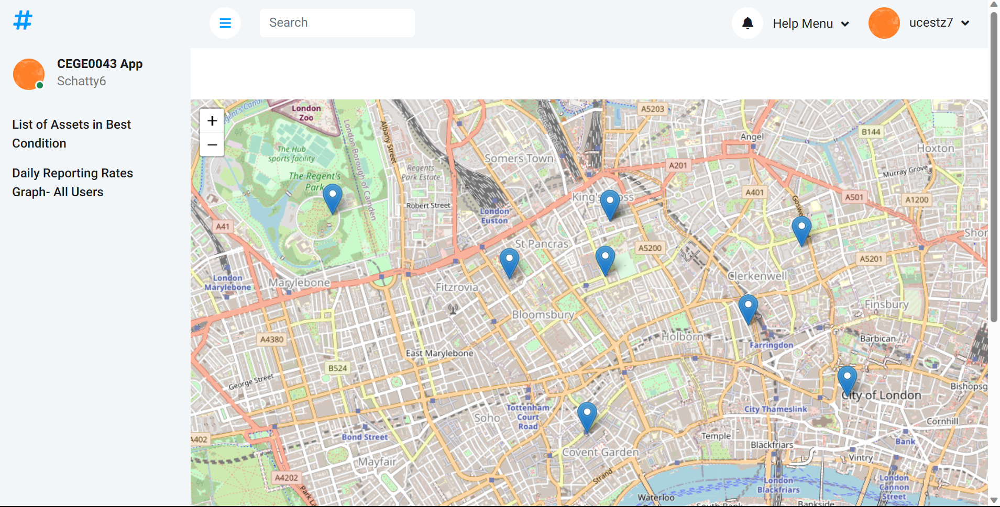
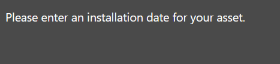
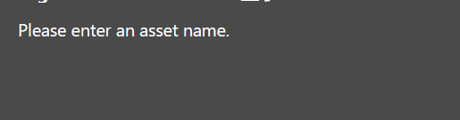
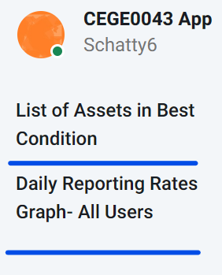
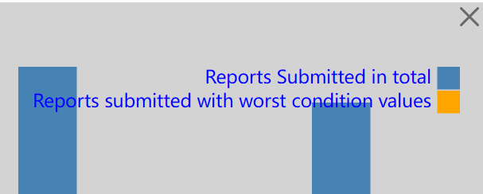
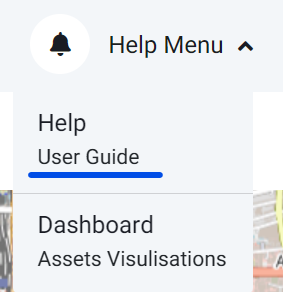
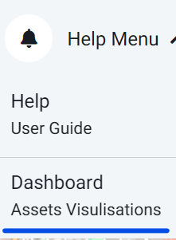

1
After starting the app, you will see a map with blue points representing existing asset points. If you are new
to this app, the map will be empty.

3
To create your own asset point, explore the map and click on the location you want. A pop-up form will appear
for you to fill in. Please note that both
Asset Name and
Installation Date are compulsory fields. If you leave
them blank, a reminder message will pop up. Simply close them and refill the form.


Important: The name you choose for your asset must be unique. If the name has already been taken, a
reminder will pop up, and you'll need to choose a different name and refill the form.
4
Once you have successfully created an asset, you can get more insights by exploring the functions on the sidebar:

- Click on List of Assets in Best Condition and you will see a pop-up list containing the name of assets in good condition.
- Click on Daily Reporting Rates Graph -All Users, and a bar graph showing the number of reports have been submitted in total and with the worst condition values will appear in replace the map.
- To get back to map view, simply click on the check on the right of bar chart.

5
If you ever forget how to use the app, don't worry! Simply click on the dropdown menu
Help (User Guide) in the Help Menu list on the top right of the screen, and you'll be guided back to this user guide.

6
If you want to explore more about the asset information, click on the
Dashboard (Assets Visulisation) menu in the Help Menu list and you'll be directed to the dashboard page.
